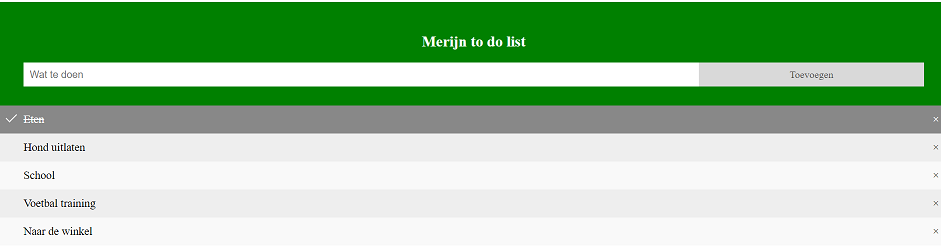
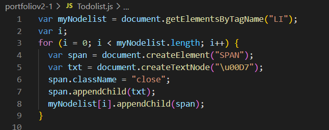
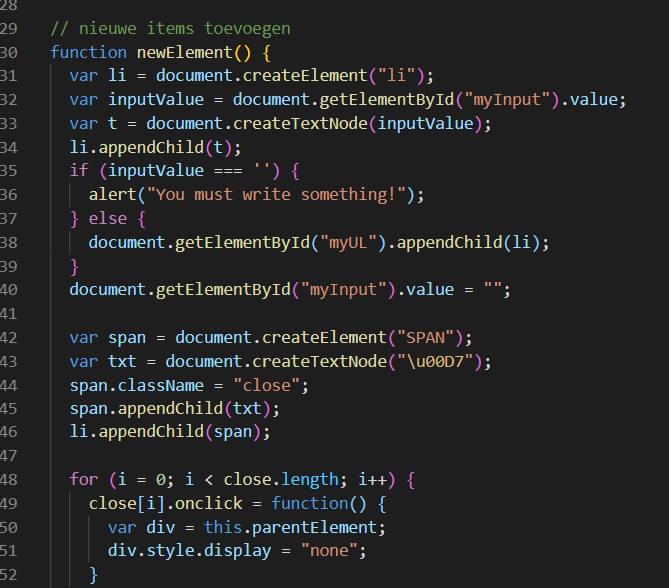

Wat heb ik gedaan?
Ik heb hier een kleine Development POC gemaakt. Dit is een to do list waar je items toe kunt voegen en verwijderen.
je kan dit bijvoorbeeld als schema gebruiken voor de dingen die je in een dag wilt doen/gedaan wilt hebben. Door op een item te klikken komt er een streep doorheen dus weet je dat je die gehad hebt.
rechts kun je via het kruisje items verwijderen uit het lijstje. En via de balk bovenin kun je items invullen en toevoegen via de knop

Wat heb ik geleerd?
Voor deze POC heb je een beetje css nodig voor de opmaak maar het gaat hier vooral om javascript.
Door deze POC te maken leer je vooral hoe je met list items moet werken. En het toevoegen en verwijderen van items aan de lijst.
Zoals je op de afbeeldingen ziet staan er ook veel if en else statements in. Door deze opdracht te doen begrijp ik steeds beter hoe ik die moet toepassen

Wat kon beter?
Het was wat overzichterlijker geweest als ik een tijdschema had toegevoegd. Bijvoorbeeld hoelaat ik de taken uitgevoerd wil hebben. Of hoeveel tijd de taken kosten